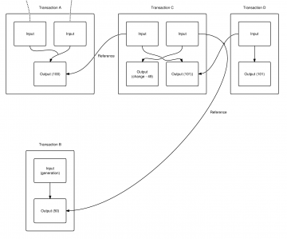
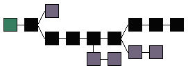
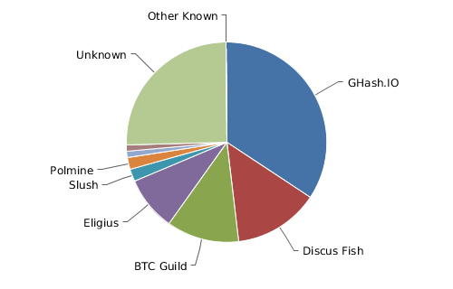

Bitcoin
Gísli Kristjánsson
19 October 2014What is bitcoin?
Bitcoin is a client/server platform, defined by a protocol, which implements a secure, distributed ledger.Why does Bitcoin have value?
Its value is derived from its scarcity and utility.Terminology
Capital B or not?
Bitcoin - protocol, software, and community
bitcoin units of the currency
also BTC
Crypto
Techniques for secure communication in the presence of third partiesKey pairs
Private key is computed
Public key is derived from the private key
Form a crypto key pair
Addresses
1QHwNS1CCywHPA2nWEZ8XDpZmXySxopc7J
A (more) readable representation of the public key
Identifier of 27-34 alphanumeric characters
Represents a possible destination for a Bitcoin payment
Can be generated at no cost
Transaction
Input
Output
Broadcast to the network
and collected into blocks
Blocks
A collection of transactionsBlockchain
Ordered collection of blocks
A block points to the previous block
creating a chain of blocksPrevents double spending with the help of miners
Peers
Miner, nodes and walletsMiners
a.k.a. weavers
Try to order blocks in the blockchain by solving math puzzles and are rewarded with new BTC
Nodes
Verify blockchain and communicate with peersWallets
File that contains a collection of private keys
Often refers to the software managing that file
Details
Security
The ledger is secured by having the nodes agree on the information stored in the blockchain.Consencus
Agreement among the nodes is achieved by having the miners vote.
The number of total votes is based on computing power.
Anonymity
- Balance is simply associated with an address and its public-private key pair
Mining
Coins are slowly mined into existence
Search for a solution to a very difficult math problem whose difficulty is precisely known
Difficulty is automatically adjusted
Block reward
13 million bitcoins (July 2014)
No more than 21 million bitcoins will ever exist
Happens in 2140
Structure

How to get
Mining
Exchanges
Face to face
ATM
Economics
While the number of bitcoins in existence will never exceed 21 million, the money supply of bitcoins can exceed 21 million due to Fractional-reserve Banking.Deflation
Keynesian economists argue that deflation is bad
The Austrian school of thought counters this criticism
51% attack
Blockchain fork
Created from time to time when two blocks are created just a few seconds apart
More serious forks have occurred after fixing bugs that required backward-incompatible changes
Comparision
Nay-sayers 1/2
[W]hen the Paris Exhibition closes electric light will close with it and no more be heard of.
- Erasmus Wilson (1878) Professor at Oxford University
This `telephone’ has too many shortcomings to be seriously considered as a practical form of communication. The device is inherently of no value to us.
- Western Union internal memo, 1878
Well informed people know it is impossible to transmit the voice over wires and that were it possible to do so, the thing would be of no practical value.
- Editorial in the Boston Post (1865)
Nay-sayers 2/2
Radio has no future.
- Lord Kelvin (1824-1907), British mathematician and physicist, ca. 1897.
There is no reason for any individual to have a computer in their home.
- Kenneth Olsen, president and founder of Digital Equipment Corp., 1977.
Early Internet 1/3
Fine, you nerds can do what you want but normal people are never going to use this thing.
It’s completely decentralized, which means you can’t trust it. No business is ever going to do anything on it because businesses won’t work on an untrusted environment. There won’t ever be any e-commerce.
There will never be any internet payments. No one will put their credit card on the internet.
It’s an open-source kind of thing so there will be no Internet companies.
Early Internet 2/3
It’s got all these technical deficiencies. It’s slow. It’s unreliable. It doesn’t work right. When you do a search, sometimes you get an answer back and sometimes you don’t. Sometimes when you dial in you get a busy signal.
What happen if your ISP goes out of business? Then you can’t get back online.
Once you get on the internet, even assuming you get on the internet, there’s nothing to do. There’s no content. Time magazine isn’t online, the New York Times isn’t online. It’s just a bunch of nerd stuff.
Early Internet 3/3
Basically every single criticism of the Internet ended up getting solved. Every single supposed fatal flaw got eliminated.HTTP
| Protocol | HTTP | Bitcoin |
|---|---|---|
| Server | Web server | Node |
| Client | Browser | Wallet |
| Prog.lang. | CGI | Script |
| Content | HTML | BTC |
| Value | Information | Money |
Why now? 1/2
The internet itself in the form of the ARPANET had been in existence for more than 20 years.
The ideas had been building.
They just hadn’t been put together as a platform.
Why now? 2/2
Bitcoin is very sharply reminiscent of this.
It’s not an overnight thing.
It’s a result of 35 years of cryptography research, going back to the early 1970s with RSA.
Digital cash is something people have been working on for 15 years leading into the Bitcoin paper.
So it’s this long-term development of a very powerful set of ideas that people have been working on for a long time.
Possibilities
Online payments for the rest of the world
Remittances
Expats sending money to their home countries
$800 billion annually
Average remittance fee 8.14% per $200 = $16.28
Bitcoin transaction fee $0.004
Bitcoin is 4000x cheaper on $200 transaction
BIPS
Bitcoin Improvement Proposals
Multi-Sig Transactions
M-of-N Standard Transactions
Pay To Script Hash
Hierachical Deterministic Wallets (HD)
Payment Protocol
Crowd funding
a.k.a. insurance contracts
Individuals pledge money to a project that is taken from them only if enough pledges are received to meet the target.
Kickstarter
Web page translation
Smart property
Car keys
Key cards
Micro payments
- Listening to Internet radio paid by the second
- Viewing web pages with a small tip for each ad not shown
- Buying bandwidth from a WiFi hotspot by the kilobyte
Multi-signature accounts
Certain number of a defined group of persons agree to sign the transactionDispute mediation
A 3-party can approve or reject a transaction in case of disagreement between the other parties without having control on their moneyFinancial instruments
Trustless collaterized lending
Bonds
Funds with policies
Exchanges (Ripple)
Platform
Like the internet, Bitcoin is a platform.
It’s less what can it do today, more what can it do in the future.
There are thousands and thousands of things that it might make possible in the future.
Digital cash, digital keys, digital voting, digital stocks, digital bonds.
Bitcoin today
Trading

BTC/USD $600
Market cap $7-8 billion
24 hour trading volume $8-9 million